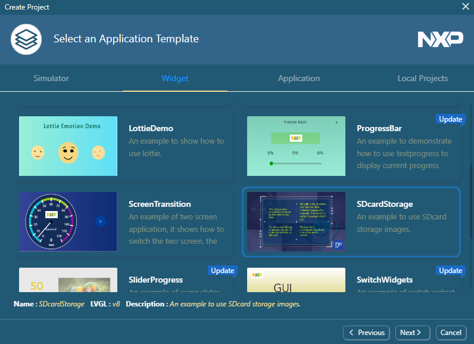
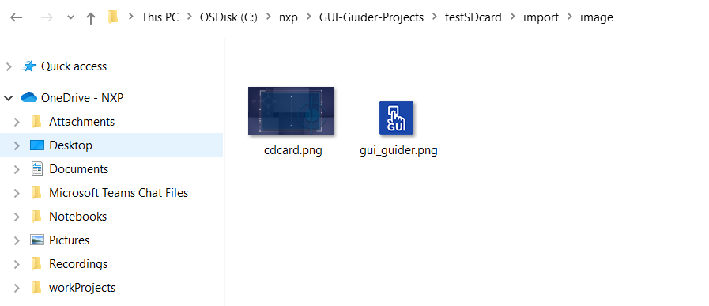

project_template
Project template
There is an application template for supported boards. The usage tips are displayed on the screen.
Create a project by selecting one supported board and the "SDcardStorage" application template.
Figure:
Create a project

The image files are located in the import folder.
Figure:
Import folder

The SD card storage can be enabled in the attribute setting window of image-related widgets.
Figure:
Attribute setting window
Copy the images into the SD card of the MCU device. If SD card storage is enabled, keep the SD path the same as the actual file folder on SD.
Note:
For the LVGL file system, use single "/" as a path separator.